安装 Fedora¶
概述¶
Fedora 是一个流行的发行版，它有很多的分支，本文只描述使用 LiveDVD 镜像安装 Fedora Workstation 以及物理机双系统（Windows 10 & Fedora）所需要注意的事项。
安装前准备¶
请参照前文自行制作安装介质。
- 如果你不喜欢 Workstation 的桌面环境（Gnome Desktop），你可以选择 Fedora Spin。
使用 Anaconda 安装系统¶
将 U 盘插入电脑并重启，你就会看到 Fedora 的引导启动页面，选择 Test this media & start Fedora-Workstation-Live 35，进入下一步。

在系统完成自检后，你就会进入到 Fedora Live 环境：

你此时可以体验一下 Fedora 的图形界面（Gnome 桌面环境），你此时所作出的更改基本不会影响到电脑原有的文件和设备。如果你想要立即进行安装系统，请点击 Install To Hard Drive
然后你就会进入 Anaconda 的操作界面：

语言¶
启动 Anaconda 后，第一步是选择语言，找到中文，并选择简体中文（如果你已经连接到网络，Anaconda 会自动选择语言），然后进入下一步。
Attention
选择语言后，你无法更改语言，除非你停止并重新启动安装程序，才能再次选择语言。
然后你就会进入安装信息摘要页面：
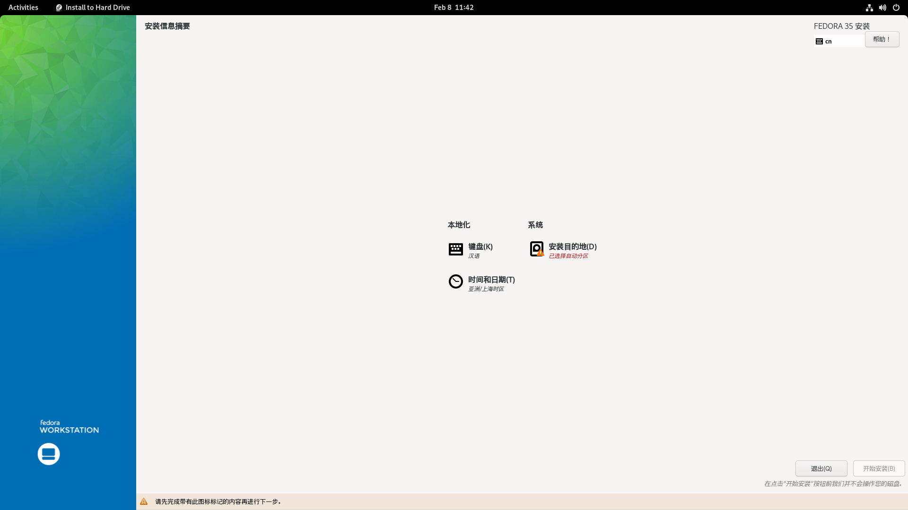
由于 workstation 的特点，此时你只能先配置语言、键盘、网络和安装位置。剩余内容需要等待安装完成后，初次启动系统才能配置。
键盘¶
打开键盘页面，如果你发现当前键盘布局不正确，或你需要其他语言的键盘布局，请点击左下方的加号，进行添加：

减号按钮用于删除，上下箭头按钮用于排序键盘布局的优先级。
时间和日期¶
打开时间和日期页面，检查时区和地区是否正确：
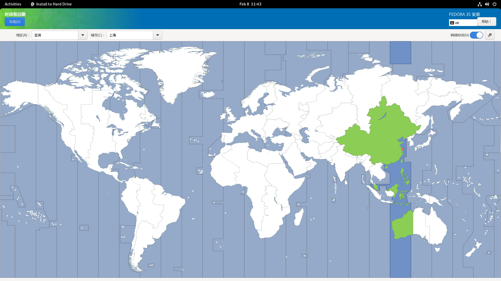
如果你发现时区不正确，在世界地图上点击你所在的位置。然后点击左上方的完成确认更改。
安装目的地¶
你可以在安装目的地中，对 Fedora 安装位置进行设置。
注意，此步需要对硬盘分区进行更改和读写，如果你不熟悉如何手动创建，挂载分区，请使用自动分区。
自动分区¶
你可在本地标准磁盘中勾选提前划分的空闲磁盘空间，然后在存储配置中选择自动进行自动分区。最后点击两次左上方的 完成(D) 确认更改即可。
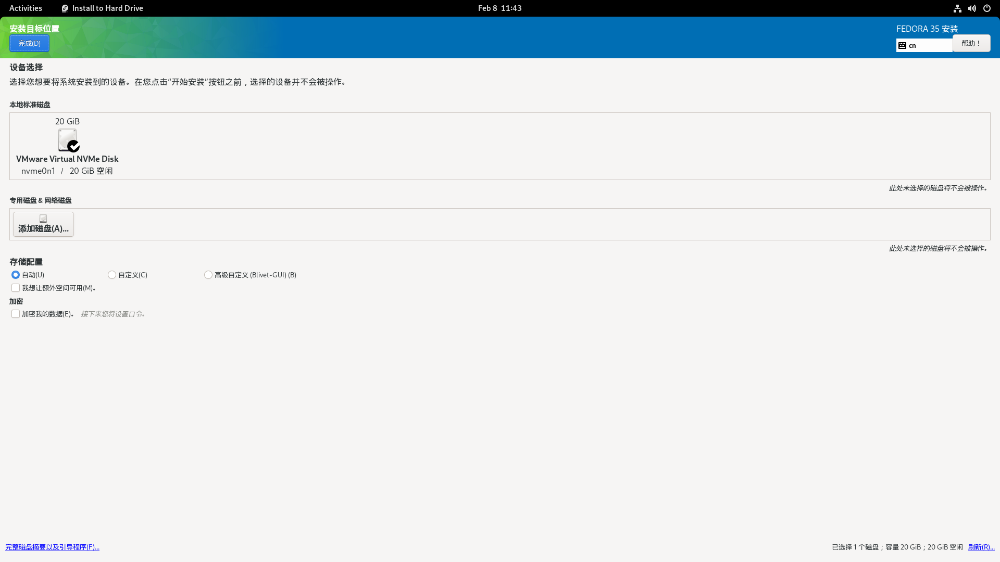
手动分区¶
- 有关使用 Blivet-GUI 进行分区的内容详见后文。
要进行简单的手动分区：
请在本地标准磁盘中勾选提前划分的空闲磁盘空间，然后在存储配置中选中自定义，然后点击左上方的 完成(D) 即可进入手动分区。
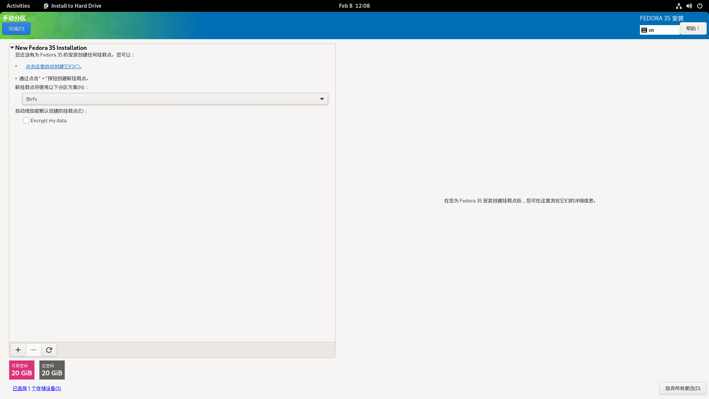
推荐使用默认的分区方案，然后点击上方的 点击这里自动创建它们，然后 Anaconda 就会自动创建分区表：

点击两次左上方的 完成(D) 确认更改即可。
最后回到安装信息摘要的首页，点击右下方的 开始安装(B) 开始安装 Fedora。
Fedora 很快就会安装到你的设备上，这时你可以放松一下~
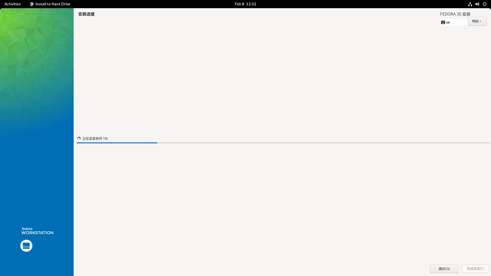
安装后初次启动¶
安装完成后，重启系统，系统会自动进入配置页面，你可以在此处完成剩余的配置。
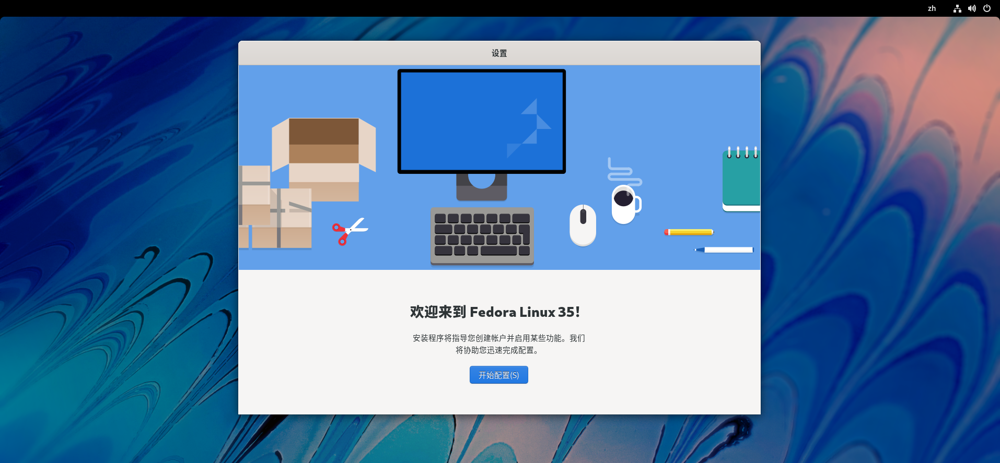
隐私¶
请根据你个人情况和喜好进行选择：
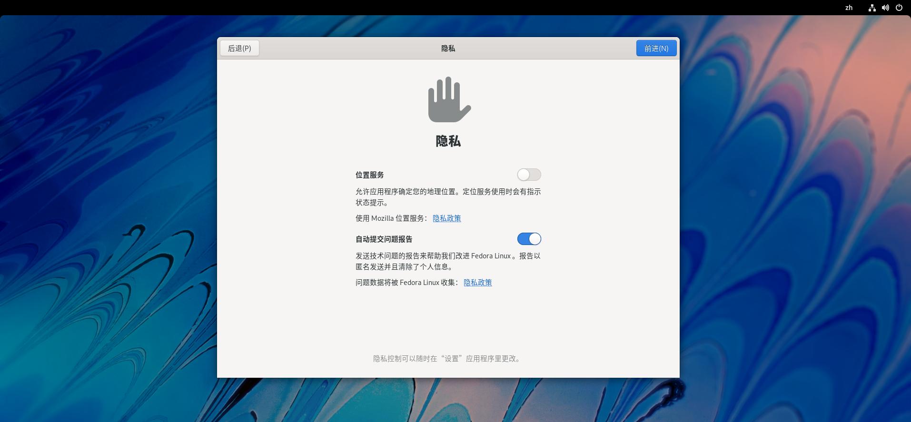
第三方软件源¶
此时，你可以选择是否开启第三方软件源。
如果你使用了非自由固件（如 NVIDIA 设计的独显，个别厂商生产的网卡）或非其他分发受限软件（一些私有固件驱动，多媒体解码器）。那么建议你开启第三方软件源：
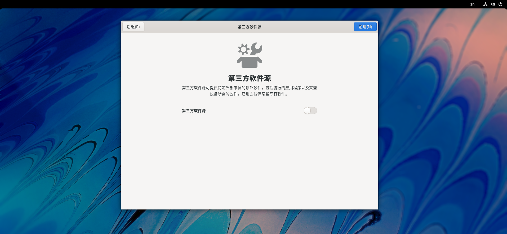
在线账户¶
你可以在此处登录你的网络账户，或者跳过：

创建用户¶
你可以在此处创建你的系统账户，请输入用户全名和用户名
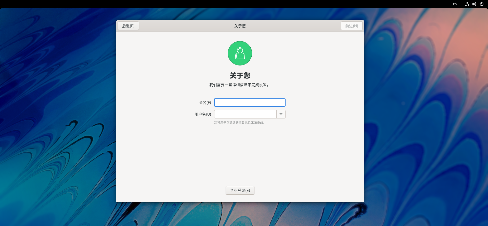
- 用户全名是你的账户全称，用户名则是你的账户简称。建议设置一个简短的用户名。
- 点击头像即可切换头像图片。
然后设置一个安全的，不低于 6 位的密码，注意保管好你的密码，一旦忘记密码是无法找回的。
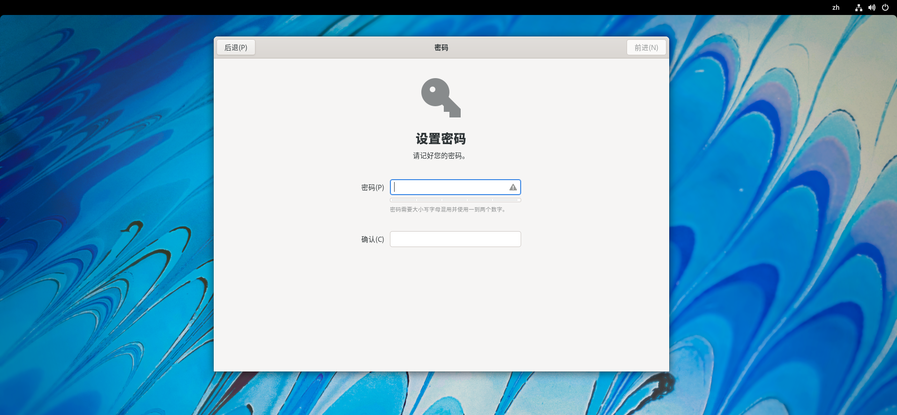
收尾工作¶
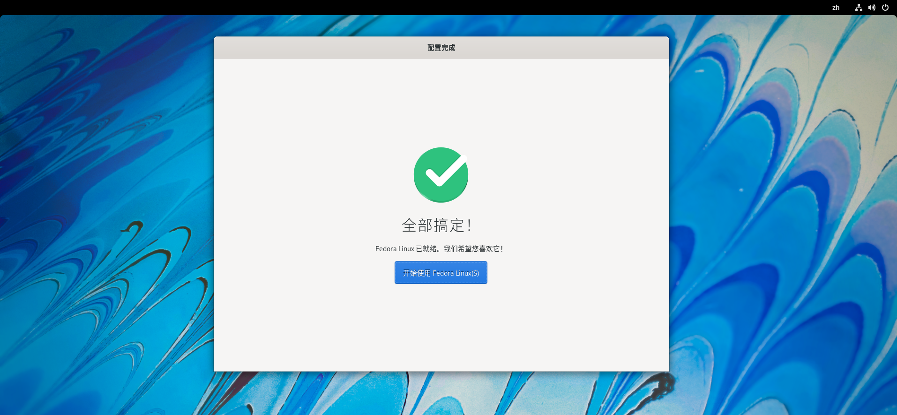
最后，点击 开始使用 Fedora Linux 进入系统。
祝你玩的愉快！(¬‿¬)
进阶内容¶
Attention
以下内容要求操作者对于 Linux 具有一定的基础知识。
使用 Blivet-GUI 进行手动分区¶
要使用 Blivet-GUI 进行手动分区：
首先点击选中你之前预留的未分配的磁盘空间（你可以同时选中多个硬盘）。然后在下方存储配置中选择高级自定义 (Blivet-GUI)，点击完成(D)进入配置页面：

选中右侧逻辑视图下方的 free space，点击上方工具栏的加号，添加一个新的分区：

Note
若磁盘没有分区表或者你打算删除原有系统进行一次全新的安装，Anaconda 会提示你选择新分区表类型（推荐设置为 GPT）。
为了安装 Fedora，你至少需要 / 和 /boot 两个基本的分区。
| 分区 | 描述 |
|---|---|
/boot |
这个分区包含操作系统内核和在引导过程中使用的其他文件。推荐大小为 1GB。文件系统类型可设置为 ext4。 |
/boot/efi |
独立的 EFI 分区，推荐当 Fedora 需要与 Windows 共存时创建该分区，大小为 512MB，格式为 vfat 或 fat32。 |
/(root) |
这是根目录所在的位置。根目录是目录结构的顶层。默认情况下，所有文件都写入此分区，除非在写入的路径中安装了不同的分区（例如，/boot 或 /home）。Fedora 现在已经使用 Btrfs 卷作为根目录的默认文件系统。官方推荐大小为 25GB 及以上。实际上你只需要保证根目录大于 15GB 即可。 |
/home |
独立的用户目录，具体大小取决于你想要放入多少文件；不是必需的分区。分区格式为 xfs、ext4 或 btrfs 等你所偏好的分区格式。 |
biosboot |
如果你的硬盘使用了 MBR 分区表而不是 GPT 分区表作为启动盘的分区形式，则你需要额外创建一个大小为 1MB，格式为 biosboot 的空白分区。 |
swap |
交换分区，Linux 将物理内存分为内存段，叫做页面。交换是指内存页面被复制到预先设定好的硬盘空间(叫做交换空间)的过程，目的是释放这份内存页面。物理内存和交换空间的总大小是可用的虚拟内存的总量。分区格式为 swap。 |
SWAP 分区推荐大小如下所示：
| 系统物理内存（RAM）大小 | 推荐的 swap 分区大小 | 推荐的 swap 分区大小（如果需要休眠） |
|---|---|---|
| 小于 2GB | RAM 的两倍 | RAM 的三倍 |
| 2GB - 8GB | 和 RAM 相同 | RAM 的两倍 |
| 8GB - 64GB | RAM 的 0.5 倍 | RAM 的 1.5 倍 |
| 大于 64GB | 基于实际工作负载而定 | 不推荐休眠 |
Note
延伸阅读：MBR 与 GPT
综上，
对于 BIOS 设备：
- /boot：设备类型设置为分区，大小设置为 1GB，文件系统设置为
ext4，挂载点设置为/boot。 - biosboot：设备类型设置为分区，大小设置为 1~2MB，文件系统设置为
BIOS Boot。 - swap：设备类型设置为分区，大小请参考上表而定，文件系统设置为
swap。 - /(root)：设备类型设置为 Btrfs 卷，大小设置为剩余空闲空间大小。
- /home：请根据实际需要创建该分区。设备类型设置为分区，大小和文 件系统类型依照实际需要而定，挂载点为
/home。
对于 UEFI 设备：
- /boot：设备类型设置为分区，大小设置为 1GB，文件系统设置为
ext4，挂载点设置为/boot。 - /boot/efi：设备类型设置为分区，大小设置为 512MB，文件系统设置为
vfat或fat32，挂载点为/boot/efi。 - swap：设备类型设置为分区，大小请参考上表而定，文件系统设置为
swap。 - /(root)：设备类型设置为 Btrfs 卷，大小设置为剩余空闲空间大小。
- /home：请根据实际需要创建该分区。设备类型设置为分区，大小和文件系统类型依照实际需要而定，挂载点为
/home。
如果你创建了错误的分区，可以点击 “+” 右侧的 “X” 删除错误的分区，或者右下方的撤销上一次操作进行回退。完成创建分区后，点击两次右上角完成确认分区结果即可。
小技巧：
- 创建分区的时候，先创建小分区（如：
/boot），再创建大分区（如：/home）。 - 独立的
/boot/efi可避免 Windows 更新 EFI 分区时导致损坏 Linux 的引导文件的可能情况（Windows Boot Manager 不是为多系统引导而设计的）。 - 不创建
swap分区也可安装 Fedora。 - 独立的
/home不是必须的，你也可以编辑现有的磁盘分区或创建一个新的大分区（用于储存大量个人文件），设置挂载点挂载到/或/home下（如果挂载的分区存储有重要文件，请勿格式化该分区）。
创建日期: 2022-01-15 12:26:16